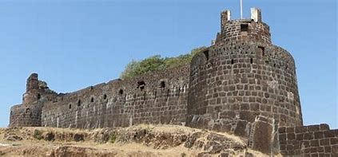

Sindhudurg Fort
Sindhudurg Fort is a historic fortification located in the Arabian Sea off the coast of Malvan, Maharashtra, India. It was built by Chhatrapati Shivaji Maharaj to protect the Maratha Empire's coastline from foreign invasions. Here are some key details about Sindhudurg Fort:
History
- Built By: Sindhudurg Fort was constructed by Shivaji Maharaj's naval chief, Hiroji Indulkar, with the help of local fishermen and stonecutters. It was completed in 1664.
- Significance: The fort served as a strategic naval base and played a crucial role in defending the Konkan coast from the Portuguese and other European powers.
Architecture
- Design: Sindhudurg Fort is built on an island rock and features strong walls, bastions, and several entrance gates designed to withstand sea attacks.
- Notable Structures: Key attractions within the fort include the temples, water reservoirs, and the famous Siddhivinayak Temple dedicated to Lord Ganesh.
Location
- Coordinates: 16.0035° N, 73.4734° E
- Elevation: Sindhudurg Fort is located at sea level, accessible via boats from the Malvan coast.
- Nearby Attractions: Nearby places of interest include Malvan beaches, the historic Sindhudurg Palace, and Tarkarli Beach known for its clear waters and water sports.
Visiting Information
- Accessibility: Visitors can reach Sindhudurg Fort by boat from Malvan Jetty, which is the main access point.
- Entry Fee: There is an entry fee for visiting the fort, typically around ₹50 for Indian nationals and ₹200 for foreign tourists.
- Best Time to Visit: The best time to visit Sindhudurg Fort is during the winter months (October to February) when the weather is pleasant and ideal for exploring.
Points of Interest
- Scenic Views: Enjoy panoramic views of the Arabian Sea and the picturesque coastline from various points on the fort.
- Historic Significance: The fort is associated with several naval battles and is a symbol of Maratha naval strength during Shivaji Maharaj's era.
Sindhudurg Fort stands as a testament to Maratha naval prowess and engineering ingenuity, attracting history enthusiasts and tourists to explore its unique architecture and scenic surroundings.